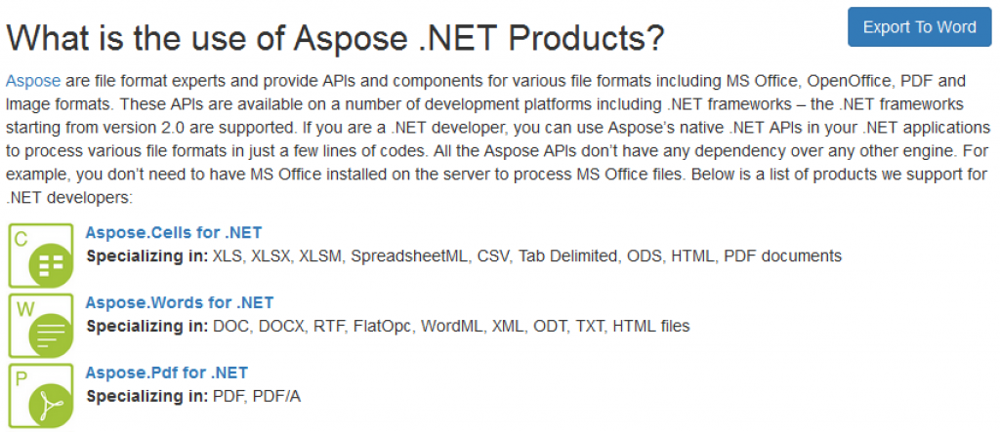

Aspose.Words Export to Word for ASP.NET MVC
 Aspose
.NET Export To Word for ASP.NET MVC allows ASP.NET developers to add "Export To Word" feature to their MVC website projects with few steps. Export to Word allows website users to download any webpage into Microsoft Word or Open Office Document. This module
demonstrates the powerful document building feature by
Aspose.Word.
Aspose
.NET Export To Word for ASP.NET MVC allows ASP.NET developers to add "Export To Word" feature to their MVC website projects with few steps. Export to Word allows website users to download any webpage into Microsoft Word or Open Office Document. This module
demonstrates the powerful document building feature by
Aspose.Word.
This initial version of the module provides the following features:
- Lets developers add "Export To Word" feature in few basic steps.
- Allows website users to Get an offline copy of their favorite online content for editing, sharing and printing in the popular DOC format.
- The generated Word processing document can then be opened using any Word Processing Application such as Microsoft Word or Apache OpenOffice etc.
- Export any page To Doc, Dot, Docx, Docm, Dotx, Dotm, Rtf, Odt, Ott and Txt formats.

{kind=link}
Download, Installation and Usage
Please check the links below to find instructions on downloading, installing, configuring and using Aspose .NET Export to Word for ASP.NET MVC.
Start a Free Trial Today
Start a free trial today – all you need is to sign up with Aspose. Once you have signed up, you are ready to try powerful file processing features offered by Aspose file format APIs.
Customer Feedback
Your feedback is very important to us. Please feel free to provide feedback and raise feature requirements. We are keen to implement customer driven features since we are a 100% customer driven company.